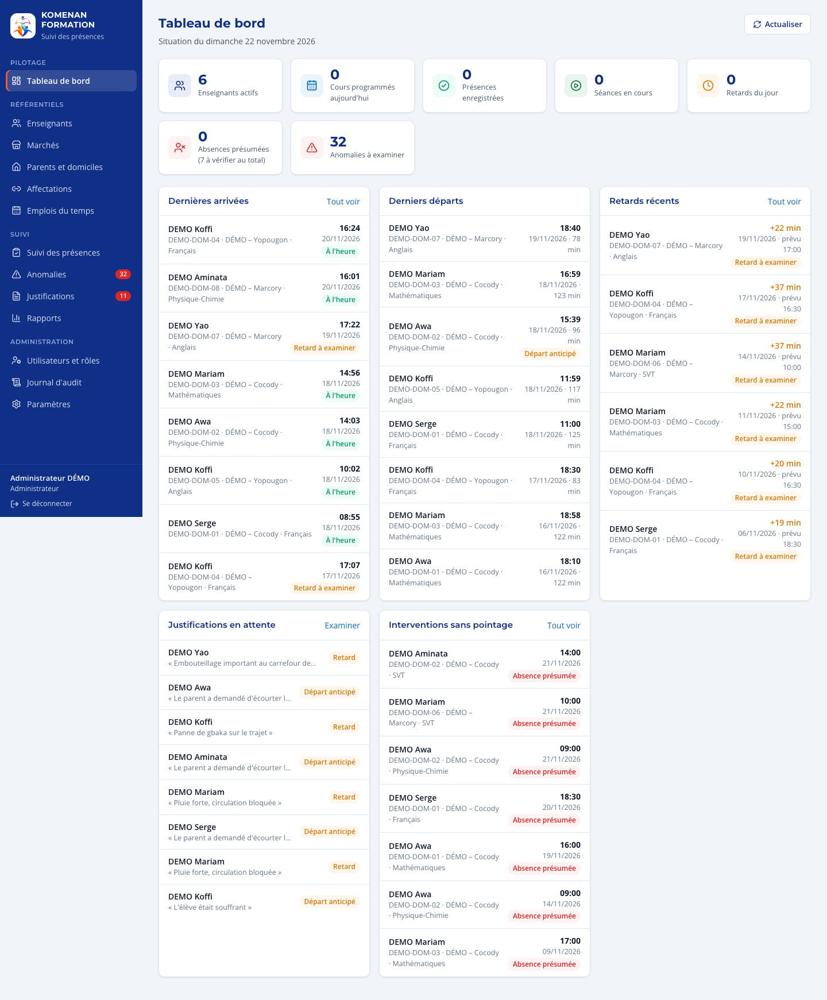
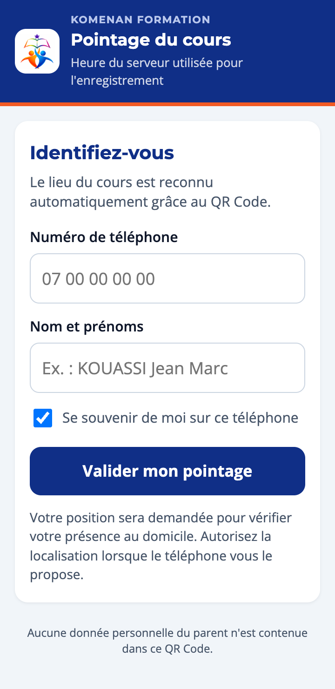
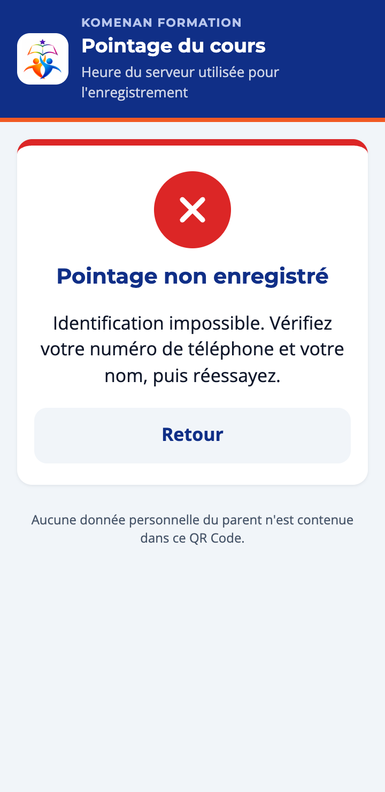
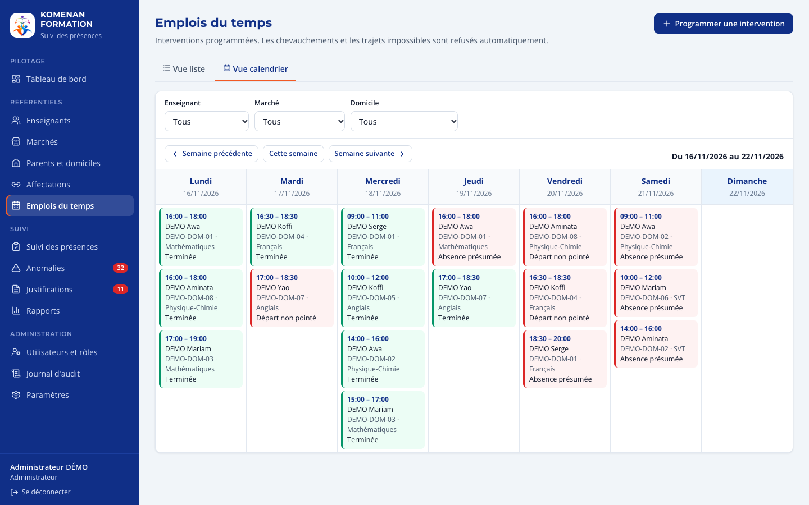
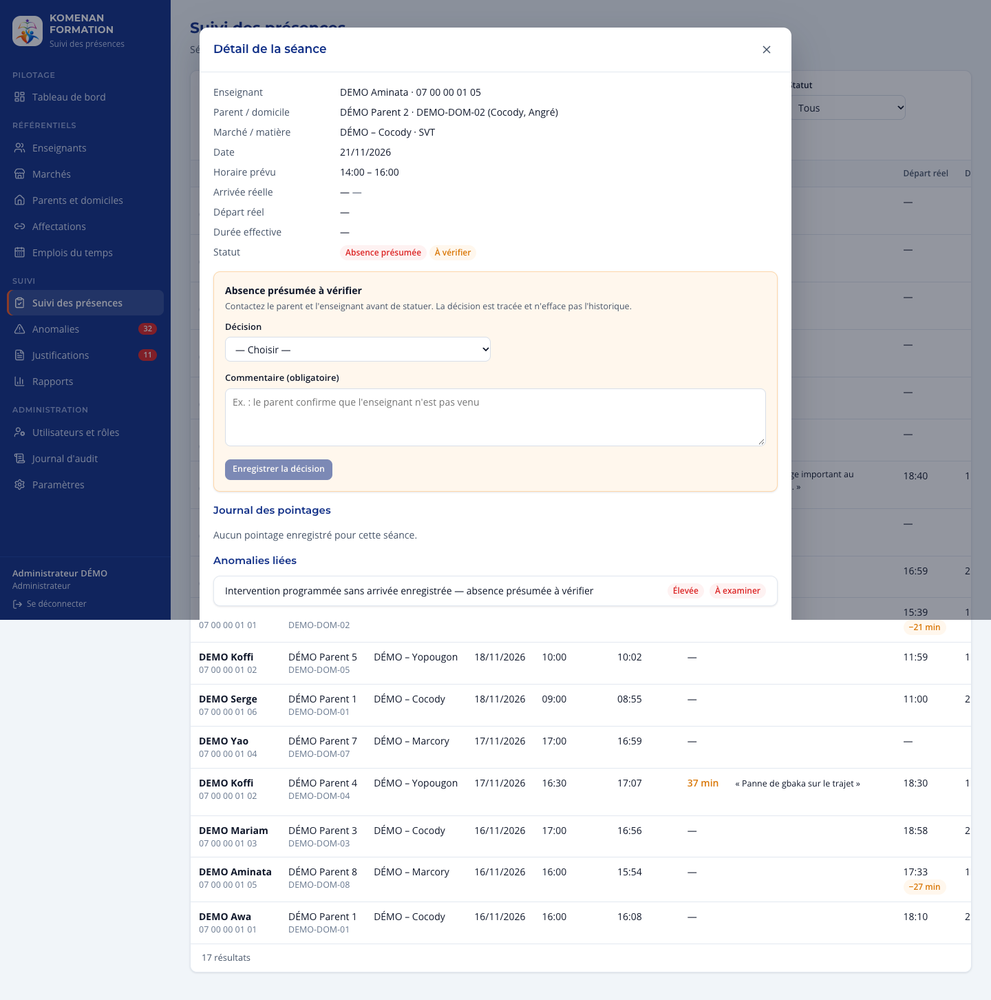
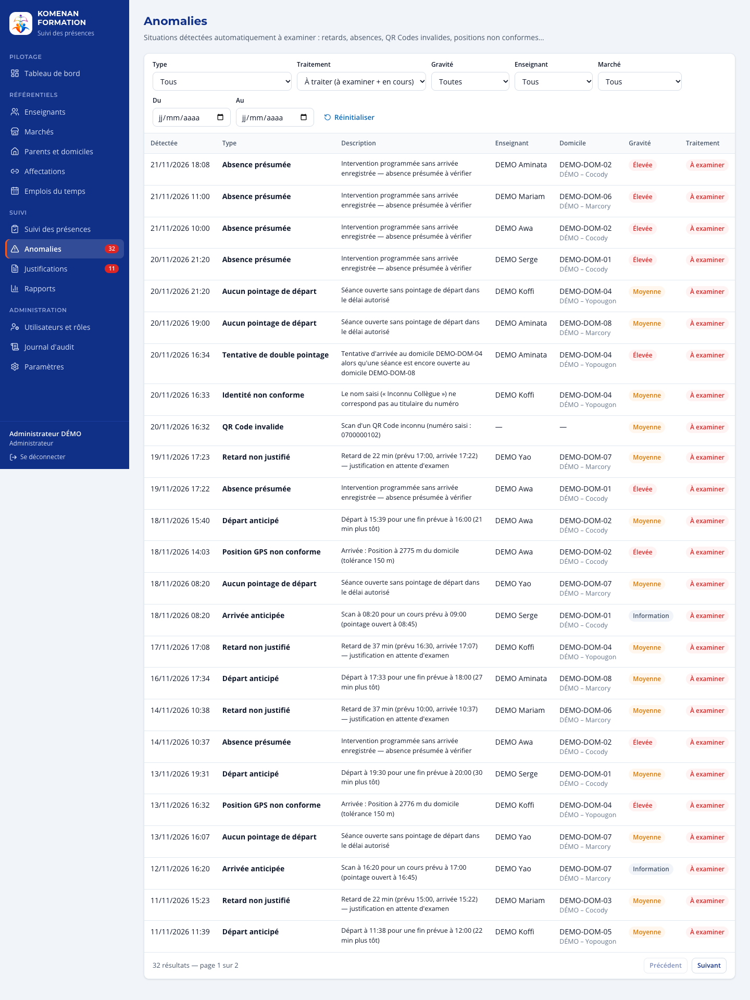
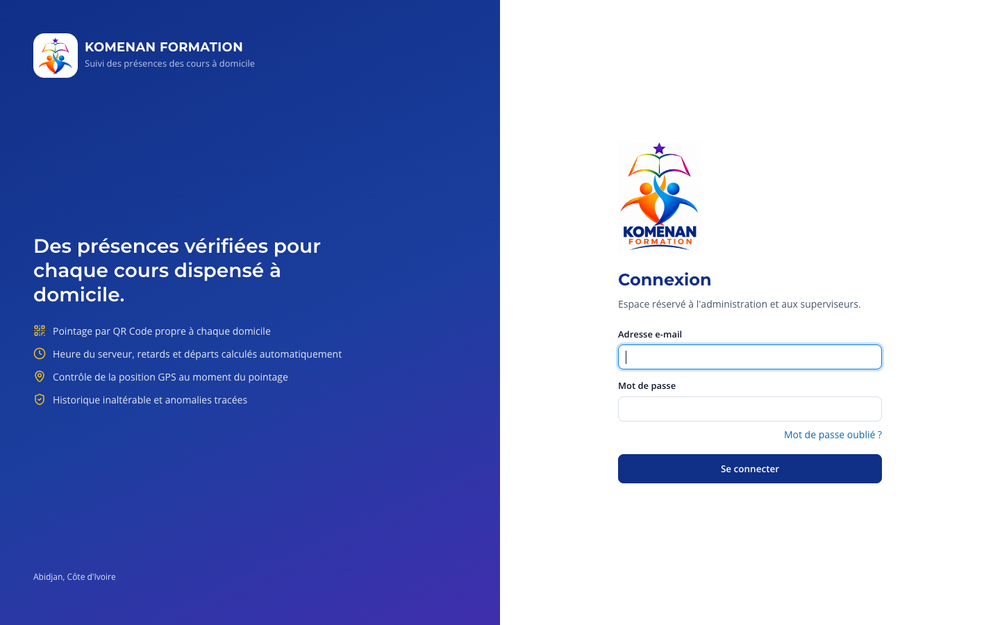

Une plateforme de pointage par QR Code qui vérifie automatiquement l'identité de l'enseignant, son affectation, son emploi du temps, l'heure et sa position — et signale chaque incohérence à l'administration.


Des enseignants déclarent avoir dispensé un cours, des parents affirment le contraire, et l'administration n'a aucun moyen fiable de trancher.
Sans trace objective, chaque désaccord entre parent et enseignant reste parole contre parole.
Les heures réelles d'arrivée et de départ ne sont ni mesurées ni justifiées.
Impossible de mesurer la durée effective des cours ou la fiabilité par enseignant et par marché.
Pas d'application à installer : l'enseignant utilise simplement l'appareil photo de son téléphone.
L'administration génère et imprime un QR Code propre à chaque lieu d'intervention. Il ne contient qu'un jeton opaque, révocable — aucune donnée du parent.
L'enseignant scanne le code, saisit son numéro et son nom, autorise la localisation. Il ne choisit jamais le lieu ni le cours.
Le serveur retrouve automatiquement l'intervention attendue et applique tous les contrôles avant de confirmer quoi que ce soit.
Le même QR Code, scanné à la fin du cours, clôture la séance et calcule la durée effective et un éventuel départ anticipé.
Aucun pointage n'est confirmé avant validation effective du serveur. Chaque tentative refusée est journalisée.

Une seule page de connexion ; le menu s'adapte au rôle (administrateur ou superviseur).
Enseignants, marchés, parents et domiciles avec coordonnées GPS, affectations avec période de validité.
Vues liste et calendrier, filtres, refus automatique des chevauchements et des trajets impossibles.
Génération, impression, téléchargement, renouvellement et révocation, avec historique complet.
Heures prévues et réelles, retards, justifications, durée effective, journal GPS de chaque pointage.
Retards, absences présumées, départs anticipés ou non pointés, QR invalides, GPS non conforme, doubles pointages — avec observations et traitement tracé.
Présences par enseignant, retards, absences, durées effectives, statistiques par marché — export PDF et Excel.




Captures réalisées avec des données entièrement fictives (« DÉMO »).
| Action | Administrateur | Superviseur |
|---|---|---|
| Consulter enseignants, domiciles, affectations, plannings | Oui | Oui |
| Suivre les présences, retards et justifications | Oui | Oui |
| Examiner les anomalies, ajouter des observations | Oui | Oui |
| Créer ou modifier enseignants, domiciles, affectations, plannings | Oui | Non |
| Générer, renouveler ou révoquer les QR Codes | Oui | Non |
| Gérer les comptes, les permissions et les paramètres | Oui | Non |
| Modifier l'historique des pointages | Non (personne) | Non |
Le journal des pointages et le journal d'audit sont en ajout seul : la base de données elle-même refuse toute modification ou suppression.
Les retards, durées et départs sont calculés uniquement à partir de l'heure du serveur, jamais de celle déclarée par le téléphone.
Tolérance de retard, ouverture et fermeture du pointage, rayon GPS, durée maximale : réglables sans toucher au code.
Une intervention sans arrivée devient « absence présumée à vérifier » ; la décision finale reste humaine et tracée.
Création, modification de planning ou d'affectation, QR Codes, traitement d'anomalie : chaque action est journalisée.
30 tests automatisés : QR falsifié ou révoqué, usurpation d'identité, scans simultanés, position hors zone, jeton rejoué…
Un QR Code photographié ou une position GPS falsifiée restent techniquement possibles. La plateforme rend la fraude beaucoup plus difficile et, surtout, trace chaque incohérence (position, identité, horaire) pour un examen humain. Elle ne rend pas la fraude impossible.
# API
cd backend && cp .env.example .env # renseigner les secrets
npm install && npm run migrate
npm run creer-admin -- admin@exemple.ci "NOM" "Prénoms"
npm start # http://localhost:4000 — /api/docs
# Back-office
cd frontend && npm install && npm run build # servi par l'APILe guide complet (base de données, données de démonstration, tests, mise en production) est dans le README du dépôt. La plateforme nécessite un serveur Node.js et MySQL avec HTTPS (indispensable à la géolocalisation) ; cette page n'en est que la présentation.